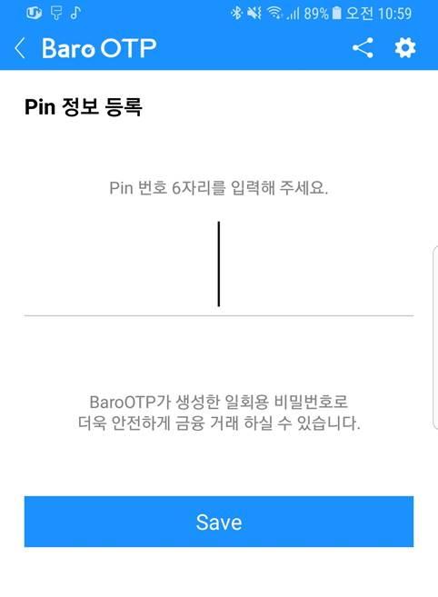

1
길게 꾸~욱 눌러주면, 아래와 같은 풍선메뉴가 표시됩니다.
메뉴 중 애플리케이션 정보를 클릭합니다.

설정화면이 나오면, 애플리케이션을 선택합니다.
BaroOTP App의 설치
OTP 발생기인
BaroOTP
App의 다운로드는 구글의
Play스토어
에서 가능하며,
설치는 일반 App 설치와 동일합니다.
1 |
스마트폰에서 Play스토어 아이콘을 클릭합니다. |
2 |
구글 Play스토어 App이 다음과 같이 실행됩니다. |
3 |
상단의 검색란에 BaroOTP 를 다음과 같이 입력하면, App이 검색됩니다. |
4 |
BaroOTP App의 정보를 확인한 후 설치 버튼을 클릭합니다. |
5 |
BaroOTP App의 다운로드 및 설치가 다음과 같이 진행됩니다. |
6 |
BaroOTPApp의 설치가 정상적으로 완료되면, 스마트폰 바탕화면에 다음과 같은 BaroOTP 아이콘이 추가됩니다. |
BaroOTP App의 사용
1 |
스마트폰에서 BaroOTP App의 아이콘을 클릭합니다. |
2 |
BaroOTP App이 활성화되면 인트로 화면이 2초간 활성화되어 다음과 같이 지속됩니다. |
3 |
Pin번호(Pin Number)가 설정되어 있지 않은 경우 (처음 사용하는 경우) 다음과 같이 Pin번호를 등록하는 화면이 나타납니다. |
|  |
4 |
Pin번호 6자리 숫자를 입력하고, Save 버튼을 클릭하여 등록합니다. :: Pin번호란? 정보를 보호하기 위해 본인만 알 수 있는 임의의 6자리 문자 |
5 |
Save가 완료되면 Login 화면이 나타납니다. 등록된 Pin번호 6자리 숫자를 입력하고, Login 버튼을 클릭합니다. |
6 |
로그인 정보가 설정되어 있지 않은 경우 (처음 사용하는 경우) 다음과 같이 로그인 정보를 등록하는 화면이 나타납니다. |
7 |
로그인 정보를 입력한 후 Save 버튼을 클릭하여 등록합니다. |
8 |
로그인 정보 목록에 등록된 로그인정보를 선택합니다. |
9 |
OTP 인증번호가 생성되었습니다. |
|
※ 만약 아래와 같이 OTP 인증번호가 보이지 않는다면, 추가적으로 권한설정 작업이 필요합니다. | |
권한 설정하기
1 |
BaroOTP App의 권한을 설정하기 위해서 BaroOTP App의 아이콘을 길게 꾸~욱 눌러주면, 아래와 같은 풍선메뉴가 표시됩니다. 메뉴 중 애플리케이션 정보를 클릭합니다. |
| |
|
※ 만약 풍선메뉴가 안나온다면 핸드폰 설정 화면으로 들어갑니다. 설정화면이 나오면, 애플리케이션을 선택합니다. | |
|
애플리케이션 목록 중 BaroOTP를 선택합니다. | |
2 |
애플리케이션 정보 화면이 보이면 화면에서
권한을 선택합니다. |
 |
3 |
앱 권한 화면이 보이면 화면에서
저장공간과
전화를 클릭하여 ON 으로 변경합니다. |
| 권한설정이 완료되었습니다. |